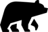

MBSE Shepherd · 2/3 · architecture
MBSE Shepherd · 2/3 · architecture
Taming the Logical Layer: Method, Automation, Simulation
Dompter la couche logique : démarche, automatisation, simulation
A simulatable logical architecture requires hundreds of SysML elements wired by hand. Building several candidates for a real trade-off is something almost no one attempts. A clear method, three right-clicks in the tool, and mission scenarios replayed at zero cost.
Une architecture logique simulable, c’est des centaines d’éléments SysML à câbler à la main. Alors en concevoir plusieurs pour faire un vrai trade-off, personne ne s’y risque. Une démarche, trois clics droits dans l’outil, et les scénarios de la mission rejoués à coût zéro.
In the first article, students modeled the sheepdog drone's mission: an executable state machine, and a drone that flies around the pasture or stays grounded. Then comes the true systems engineering question: which subsystems perform all of this, and what do they exchange? That is the logical layer.
The concept fits in a single sentence. The execution, far less so. For a logical architecture to be simulable, each component must have its state machine and functions; each signal must originate from a port wired to the right recipient; each port must be typed by an interface whose flow properties carry the right signals in the right direction; and each duplicated function must preserve its traceability to the mission. Do the math on our lab's drone:
Dans le premier article, les étudiants modélisaient la mission du drone berger : une machine d’états qui s’exécute, et un drone qui vole dans le pâturage, ou qui reste au sol. Vient alors la vraie question de l’ingénieur système : quels sous-systèmes font tout ça, et qu’est-ce qu’ils s’échangent ? C’est la couche logique.
Le concept tient en une phrase. La réalisation, beaucoup moins. Pour qu’une architecture logique soit simulable, chaque composant doit avoir sa machine d’états et ses fonctions ; chaque signal doit partir d’un port relié au bon destinataire ; chaque port doit être typé par une interface dont les propriétés de flux portent les bons signaux, dans le bon sens ; et chaque fonction copiée doit garder sa traçabilité vers la mission. Faites le compte, sur le drone du TP :
Figure 1. What the lab's three correction logical architectures contain, measured from their formal specifications. Message counts are obtained by replaying the complete scenario with the site's simulator. Figure 1. Ce que contiennent les trois architectures logiques de correction du TP, comptées sur leurs spécifications. Les messages sont comptés en rejouant le scénario complet avec le simulateur du site.
And that is just one candidate architecture. In the logical layer, the job isn't to wire a single box: it's to propose multiple candidates, then decide through a trade-off. When wiring just one candidate already takes hours, no one builds three.
Whether training students or industry professionals, I observed the exact same pattern: all cognitive bandwidth evaporated in plumbing, leaving no energy left to design. The verdict is clear: the logical layer takes far too long to build in the tool. This article explains how we tooled it.
Et ce n’est qu’une architecture. En couche logique, le métier n’est pas de câbler une boîte : c’est de proposer plusieurs architectures candidates, puis de trancher par un trade-off. Quand câbler une seule candidate prend déjà des heures, personne n’en fait trois.
Que je forme des étudiants ou des professionnels, j’observais la même chose : tout le temps passait dans la plomberie, et il ne restait plus d’énergie pour concevoir. Le constat est simple : la couche logique est trop longue à faire faire dans l’outil. Cet article raconte comment on l’a outillée.
- Learn by doing hands-on learning, connected live to the tool
- Design without the plumbing the logical layer: method, automation, simulation (this article)
- Delegate to AI the same method, the same tools, the same judge
- Apprendre par la pratique un TP vivant, connecté à l’outil
- Concevoir sans la plomberie la couche logique : démarche, automatisation, simulation (cet article)
- Déléguer à l’IA la même méthode, les mêmes outils, le même juge
1 The watchword: Method, Automation, Simulation
1 Le mot d’ordre : démarche, automatisation, simulation
Memorizing fUML syntax and SysML plumbing is not a systems engineer's core mission. Their mission is to decide who does what, who notifies whom, and whether the collective whole fulfills the mission. Everything else should cost as little as possible.
The entire logical layer of the lab thus boils down to three words, which also form the roadmap of this article:
Connaître la syntaxe fUML et la plomberie SysML ne fait pas partie de la mission d’un ingénieur système. Sa mission, c’est de décider qui fait quoi, qui prévient qui, et si l’ensemble tient la mission. Tout le reste devrait coûter le moins possible.
Toute la couche logique du TP tient donc en trois mots, qui sont aussi le plan de cet article :
2 The method: from mission to subsystems
2 La démarche : de la mission aux sous-systèmes
We don't start from a blank slate. We start from what already flies: the mission state machine, validated at the functional layer. In this mission, the drone talks to itself: each decision is an internal signal sent by an action that drives the mission forward. Moving to the logical layer means distributing its states and functions across subsystems. Inside a subsystem, talking to oneself remains allowed. As soon as another box needs to know, it must pass through a port.
The workflow follows four steps:
- Identify subsystems and their states. We look for patterns in the mission. A parallel orthogonal region is often a subsystem: the three regions of Patrolling yield perimeter watch, flock monitoring, and predator defense. It works in both directions: create a component and allocate states to it, or let a coherent cluster of states reveal the component. All pre-flight prep, Undeployed, thus becomes Mission Configuration.
- Make the inside work first. Once states are allocated and their functions cloned, we work on the subsystem's state machine (or the orchestrator's) and its internal functions until it advances cleanly.
- Settle the outside next. The inside is running; we then address external interactions: what must I receive, what must I send, and to whom?
- Iterate. Second subsystem, third. Then, on this foundation, primary features one by one; at each testable feature, wire and validate.
On ne part pas d’une feuille blanche. On part de ce qui vole déjà : la machine d’états de la mission, validée en couche fonctionnelle. Dans cette mission, le drone se parle à lui-même : chaque décision est un signal qu’une fonction s’envoie, et qui fait avancer la mission. Passer au logique, c’est répartir ses états et ses fonctions entre des sous-systèmes. À l’intérieur d’un sous-système, se parler à soi-même reste permis. Dès qu’un autre doit savoir, ça passe par un port.
La séquence de travail tient en quatre étapes :
- Identifier les sous-systèmes et leurs états. On cherche des motifs dans la mission. Une région parallèle est souvent un sous-système : les trois régions de Patrolling donnent la patrouille, les moutons, le prédateur. Ça marche dans les deux sens : on crée un composant et on lui alloue des états, ou un groupe d’états cohérents fait émerger le composant. Toute la préparation, Undeployed, devient ainsi Mission Configuration.
- Faire tourner l’interne d’abord. Une fois les états alloués et leurs fonctions dupliquées, on travaille la machine d’états du sous-système, ou celle de l’orchestrateur, et ses fonctions, jusqu’à ce qu’elle avance proprement.
- Régler ensuite l’externe. L’intérieur tourne ; on se pose alors la question du dehors : qu’est-ce que je dois recevoir, qu’est-ce que je dois envoyer, et à qui ?
- Itérer. Deuxième sous-système, troisième. Puis, sur cette base, les fonctionnalités principales une par une ; à chaque fonctionnalité testable, on connecte et on valide.
Figure 3. The four steps, illustrated on the lab mission and the central orchestrator architecture (simplified). Choose a step, or let it play through. Figure 3. Les quatre étapes, sur la mission du TP et l’architecture à orchestrateur central (simplifiées). Choisissez une étape, ou laissez défiler.
Two questions per signal
Deux questions par signal
The external step reduces to two questions asked for every signal in the subsystem: who triggers the transition, and who else needs to know? On Mission Configuration:
L’étape externe se réduit à deux questions, posées pour chaque signal du sous-système : qui déclenche la transition, et qui d’autre doit savoir ? Sur Mission Configuration :
| Signal | Who triggers the transition? | Who else needs to know? | Resulting architecture |
|---|---|---|---|
Start SOI | External: system power-on | Nobody | An incoming port (p_Init) |
FlightPlan (transmit flight plan) | External: operator, via ground station | Nobody else initially | An incoming port (p_BaseStation) |
Ready for mission / FlightPlan Correct | Itself: Load Flight Plan | The operator: confirm that flight plan is valid | An internal send, plus an outgoing _ext signal (p_Verdict) |
FlightPlan Check Failed / FlightPlan Incorrect | Itself: Load Flight Plan | The operator: notify flight plan rejection | An internal send, plus an outgoing _ext signal (p_Verdict) |
Start Sheep Guard Mission | External: operator | The decider component, which launches mission | An incoming port, plus an outgoing _ext signal |
| Signal | Qui déclenche la transition ? | Qui d’autre doit savoir ? | Ce que ça donne |
|---|---|---|---|
Start SOI | L’extérieur : la mise sous tension | Personne | Un port entrant (p_Init) |
FlightPlan (envoi du plan de vol) | L’extérieur : l’opérateur, via la base sol | Personne d’autre au départ | Un port entrant (p_BaseStation) |
Ready for mission / FlightPlan Correct | Lui-même : Load Flight Plan | L’opérateur : confirmer que le plan est valide | Un envoi à soi-même, plus un signal sortant _ext (p_Verdict) |
FlightPlan Check Failed / FlightPlan Incorrect | Lui-même : Load Flight Plan | L’opérateur : signaler le rejet du plan | Un envoi à soi-même, plus un signal sortant _ext (p_Verdict) |
Start Sheep Guard Mission | L’extérieur : l’opérateur | Le décideur, qui lance la mission | Un port entrant, plus un signal sortant _ext |
Watch out for the classic trap: when the operator transmits a flight plan, they cannot be left without an acknowledgement. The internal verdict — whether the plan is valid (FlightPlan Correct / Ready for mission) or rejected (FlightPlan Incorrect / FlightPlan Check Failed) — must imperatively be communicated back to the operator. That is why these internal signals are duplicated to an outgoing port (p_Verdict), so the ground station knows whether the drone is cleared for takeoff or if the flight plan needs correction.
The golden rule remains crystal clear: triggered by itself and nobody else concerned: a simple internal send. Triggered from the outside: an incoming port. Someone else needs to know (like the operator awaiting plan confirmation): an outgoing port with its own dedicated signal. These two questions cannot be automated; this is precisely where systems engineering happens. Everything that follows, however, automates beautifully.
Attention au piège classique : quand l’opérateur transmet un plan de vol, il ne peut évidemment pas rester sans acquittement. Le verdict interne — que le plan de vol soit correct (FlightPlan Correct / Ready for mission) ou incorrect (FlightPlan Incorrect / FlightPlan Check Failed) — doit impérativement être recommuniqué vers l’opérateur. C’est pour cela que ces signaux internes sont dupliqués vers un port sortant (p_Verdict), pour que la station sol sache si le drone est prêt à partir ou si le plan doit être corrigé.
La règle générale reste limpide : déclenché par lui-même et personne d’autre concerné : un simple envoi interne. Déclenché du dehors : un port entrant. Quelqu’un d’autre doit savoir (comme l’opérateur attendant la confirmation de son plan) : un port sortant, avec un signal à lui. Ces deux questions ne s’automatisent pas ; c’est exactement là que l’ingénieur système travaille. Tout ce qui vient après, en revanche, s’automatise très bien.
3 Automation: three right-clicks
3 L’automatisation : trois clics droits
Consider Mission Configuration alone, the smallest of subsystems. By hand, you have to redraw its five states and their transitions, copy every function they invoke, link each copy to its original via «refine», allocate the originals to the block. Then, for every incoming signal, create a port, an interface, and a flow property typed by that signal in the correct direction. Next, for every outgoing signal, create a dedicated signal, an invocation in the transition's effect, configured with the right target port. None of this is difficult. On the other hand, it is tedious and grueling, and a single typo silently breaks simulation.
The MBSE Shepherd plugin turns all of this into three right-clicks:
- Logical Transition. Select states from the mission, pick the component: states are cloned into its state machine, along with their substates, internal transitions, and all invoked functions. Each copy receives a
«refine»link to its original, the original is allocated to the block, and the mission model is never altered. Any transition leaving the selection points to a freshly generatedoff-TO RENAMEstate: the subsystem boundary, made visible. - Create All Missing Signal Ports. Right-clicking a part analyzes its behavioral model and creates all missing ports at once: an incoming port for every signal advancing its state machine from the outside, and an outgoing port for every signal fired by its functions that its own state machine does not consume. Every port comes typed by its interface, with properly oriented flow properties. On Mission Configuration: five ports in one click.
- Delegate to external systems. Right-click a transition whose trigger is internal, but which an external entity must know about: the command creates its external twin,
Ready for mission_ext, attaches the send action to the transition effect, and provisions the accompanying port.
Prenons le seul Mission Configuration, le plus petit des sous-systèmes. À la main, il faut redessiner ses cinq états et leurs transitions, copier chaque fonction qu’ils appellent, lier chaque copie à son original par «refine», allouer les originaux au bloc. Puis, pour chaque signal qui arrive du dehors, créer un port, une interface, une propriété de flux typée par le signal, dans le bon sens. Puis, pour chaque signal qui sort, un signal dédié, son envoi dans l’effet de la transition, avec le bon port renseigné. Rien de tout cela n’est difficile. En revanche, tout est long, et une seule faute de frappe casse la simulation.
Le plugin MBSE Shepherd transforme le tout en trois clics droits :
- Logical Transition. On sélectionne des états de la mission, on choisit le composant : les états sont copiés dans sa machine d’états, avec leurs sous-états, leurs transitions et toutes les fonctions qu’ils appellent. Chaque copie reçoit un
«refine»vers son original, l’original est alloué au bloc, et la mission n’est jamais modifiée. Une transition qui sortait de la sélection pointe vers un étatoff-TO RENAME, à renommer : c’est la frontière du sous-système, rendue visible. - Create All Missing Signal Ports. Un clic droit sur la part analyse son comportement et crée tous les ports manquants : un port entrant pour chaque signal qui fait avancer sa machine d’états et vient du dehors, un port sortant pour chaque signal envoyé par ses fonctions et que sa machine d’états ne consomme pas. Chaque port vient typé par son interface, avec sa propriété de flux orientée. Sur Mission Configuration : cinq ports d’un coup.
- Delegate to external systems. Un clic droit sur une transition dont le signal est interne, mais que quelqu’un dehors doit connaître : la commande crée son jumeau pour l’extérieur,
Ready for mission_ext, l’envoi dans l’effet de la transition, et le port qui va avec.
The division of labor is crisp: syntax is hidden, the engineering decision stays visible. Choosing subsystem states, deciding who needs to know what, grouping signals into an exchange: that is the engineer's role. Transcribing, typing, orienting, and wiring: that is the plugin's job.
This is not "magic allocation". A right-click does not conjure a finished logical architecture out of thin air: it plants the seed. It allows you to initialize a component without drowning in boilerplate, to connect it cleanly to other systems through coherent ports and signals, and to provide a sound starting point. But beyond this foundation, true modeling resumes: you must subsequently refine functional and logical behaviors for each system — tuning their state machines, detailing internal activities, and handling local edge cases.
A simplified method with custom tooling: these commands were developed specifically for this course. Each generates only standard SysML elements that an engineer would build by hand: blocks, states, activities, ports, interfaces, connectors, «refine», «allocate». The model remains fully readable and modifiable without the plugin.
Le partage des rôles est net : la syntaxe est cachée, la décision reste visible. Choisir les états d’un sous-système, décider qui doit savoir quoi, regrouper des signaux en un échange : c’est l’ingénieur. Recopier, typer, orienter, renseigner : c’est le plugin.
Ce n’est pas de l’« allocation magique ». Un clic droit ne produit pas une architecture logique achevée d’un coup de baguette : il en pose l’amorce. Il permet d’initier le composant sans se noyer dans la plomberie, de le connecter facilement avec les autres systèmes grâce à des ports et des signaux cohérents, et de donner un point de départ propre. Mais derrière cette amorce, le travail de modélisation reprend ses droits : il faut ensuite retravailler le comportement fonctionnel et logique pour chacun des systèmes — adapter leur machine d’états, affiner leurs activités internes et gérer leurs règles propres.
Une méthode simplifiée, avec des outils maison : ces commandes ont été écrites pour ce cours. Chacune ne crée que des éléments SysML standard, ceux qu’on ferait à la main : blocs, états, activités, ports, interfaces, connecteurs, «refine», «allocate». Le modèle reste lisible, et modifiable, sans le plugin.

4 Simulation: replaying the mission at zero cost
4 La simulation : rejouer la mission, à coût zéro
Once internal logic and external interfaces for a feature are hooked up, how do you verify correctness? You don't squint at static diagrams: you replay the mission scenarios. They already exist, written and validated at the functional layer. If the scenario executes on the logical architecture and advances the mission to the exact same states as before, the feature is validated.
Hence an incremental build. First, establish a core base of technical components without architectural dilemma: power-on, configuration, ground link, autopilot. Then add features one by one: departure, patrol, flock, bear, deterrence. At each increment, replay the relevant phase of the scenario; earlier increments are replayed as preconditions. Try it:
Une fois l’interne et l’externe d’une fonctionnalité branchés, comment savoir qu’on est bon ? On ne relit pas des diagrammes : on rejoue les scénarios de la mission. Ils existent déjà, écrits et validés en couche fonctionnelle. Si le scénario passe sur l’architecture, et fait avancer la mission au même endroit qu’avant, la fonctionnalité est validée.
D’où une construction par incréments. On pose d’abord un socle, les composants techniques sans enjeu d’architecture : mise sous tension, configuration, liaison sol, autopilote. Puis on ajoute les fonctionnalités une à une : le départ, la patrouille, les moutons, l’ours, la dissuasion. À chaque incrément, on rejoue la phase du scénario qui le concerne ; les incréments précédents sont rejoués en précondition. Essayez :
Figure 5. Incremental construction of the logical architecture, replayed using the site's simulator over the formal specifications of the correction models. Figure 5. La construction de l’architecture logique, incrément par incrément, rejouée avec le simulateur du site sur les spécifications des modèles de correction.
Replaying uncovers genuine architectural flaws. Switch to the leaderless architecture and replay “Bear, without patch”: predator management is wired, but nobody suspends sheep monitoring or yields autopilot control to perimeter watch. Two steps fail in red. Apply the patch, replay “Bear”: all green. The flaw was not a poorly drawn diagram; it was an architectural bug, and it was the mission scenario that caught it.
Why “zero cost”
Because you don't need to write a single new test to start. Nominal, alternative, and dysfunctional scenarios were defined once, on the mission: a bear passes by, a bear approaches then retreats, a sheep wanders off. The logical layer replays them verbatim; only the expected states change ownership across parts.
An acknowledged pedagogical simplification: in this lab, replaying the mission directly closes the loop and validates overall integration without exceeding the allocated lab time. In a rigorous systems engineering process, however, one should normally author dedicated logical test scenarios for each subsystem. Each box has its own operational boundary, incoming/outgoing flows, and degraded modes: defining unit test scenarios per subsystem is essential to validate logical behavior in isolation prior to or alongside assembly.
And in the tool
The in-guide simulator is a fast scratchpad. The ultimate judge is the student's model: under each scenario, Validate in the tool initiates simulation in their model, injects the same signals, reads back the active state of each part, and highlights any discrepancy in red.
Le rejeu débusque de vraies failles d’architecture. Passez sur l’architecture sans chef et rejouez « Ours, sans patch » : la gestion du prédateur est branchée, mais personne ne suspend la surveillance des moutons ni ne rend l’autopilote à la patrouille. Deux étapes passent au rouge. On ajoute le patch, on rejoue « Ours » : c’est vert. L’erreur n’est pas dans un diagramme mal dessiné ; elle est dans l’architecture, et c’est la mission qui la trouve.
Pourquoi « coût zéro »
Parce que rien n’est à écrire pour démarrer. Les scénarios nominaux, alternatifs et dysfonctionnels ont été décrits une fois, sur la mission : un ours passe, un ours approche puis recule, un mouton s’échappe. La couche logique les rejoue tels quels ; seuls les états attendus changent de propriétaire.
Une simplification assumée : dans le TP, rejouer directement la mission permet de boucler la boucle et de valider l’intégration globale sans déborder du temps imparti. Mais dans une démarche d’ingénierie système rigoureuse, il faut normalement décrire des scénarios logiques pour chacun des systèmes. Chaque sous-système a son périmètre, ses flux entrants/sortants et ses modes dégradés : spécifier des scénarios de test propres à chaque boîte est indispensable pour valider son comportement logique en isolation avant ou pendant l’assemblage.
Et dans l’outil
Le simulateur du guide est un banc d’essai rapide. Le juge, c’est le modèle de l’étudiant : sous chaque scénario, Validate in the tool démarre la simulation dans son modèle, envoie les mêmes signaux, relit l’état de chaque part, et affiche en rouge ce qui diffère de l’attendu.
5 Finally: multiple candidates and a real trade-off
5 Enfin : plusieurs candidates, et un vrai trade-off
With this method and tooling, modeling an additional candidate no longer costs entire working days. We start from the same mission, group or decouple responsibilities, reconnect, and replay. But an architectural trade-off isn't about counting ports or boxes on a diagram: the real question centers on orchestration and decision locus. Where does arbitration logic reside, with what degree of inter-subsystem coupling, and at what cost of future evolution?
The lab pits three very concrete orchestration philosophies against each other:
- Decentralized patch (peer-to-peer): Start from an existing patrol drone and splice on predator defense via the shortest path. A direct link between bear and sheep subsystems to suspend flock monitoring, and you're done.
Advantage: Minimal implementation effort when building on an existing legacy baseline (two transitions, one signal, remainder of model untouched).
Downside: Heavy point-to-point coupling. The mission governance rule is invisible: buried inside the predator component. In terms of scalability, every new feature (e.g. battery alerts, obstacle avoidance) will demand new cross-cutting patches until you get a bowl of spaghetti. - Centralized orchestrator (star): A single hub receives all sensor observations, resolves priority arbitration (bear > sheep > patrol), and redistributes commands.
Advantage: Crystal-clear mission readability (all governance rules consolidated in one place) and very simple peripheral components.
Downside: Massive coupling toward the orchestrator, throughput bottleneck, single point of failure (SPOF), and explosion in transient message traffic. - Autonomous-feature orchestrator: The orchestrator only manages high-level modes (who holds flight authority); each functional subsystem carries its internal logic and commands flight directly.
Advantage: Outstanding scalability (adding a feature reduces to adding an authority mode without touching existing ones) and controlled coupling.
Downside: Heavier individual components and distributed decision logic.
Deciding demands real metrics. We don't guess: we lay down a multi-criteria grid (rule clarity, refactoring cost on legacy, scalability, SPOF immunity, local component simplicity) and cross-reference these axes with empirical simulation metrics (message volume generated across the scenario, states actually reached, fault tolerance). That is where MBSE fulfills its true promise:
Avec la démarche et les outils, modéliser une candidate de plus ne coûte plus des journées entières. On repart de la même mission, on regroupe ou on scinde des responsabilités, on reconnecte et on rejoue. Mais un trade-off d’architecture ne consiste pas à compter des ports ou des boîtes sur un diagramme : la vraie question porte sur l’orchestration et la localisation de la décision. Où vit la logique d’arbitrage, avec quel couplage entre les sous-systèmes, et pour quel coût d’évolution ?
Le TP met en concurrence trois philosophies d’orchestration très concrètes :
- Le patch décentralisé (peer-to-peer) : on part d’un drone qui patrouille déjà, et on greffe la défense prédateur au plus court. Un lien direct entre l’ours et les moutons pour suspendre la surveillance, et le tour est joué.
Avantage : complexité d’implémentation minimale en repartant d’un système existant (deux transitions, un signal, le reste du modèle est intact).
Revers : fort couplage point-à-point. La règle de mission n’est visible nulle part : elle est enfouie dans le composant prédateur. Côté scalabilité, chaque nouvelle fonctionnalité (ex. alerte batterie, évitement d’obstacle) exigera de nouveaux patchs croisés, jusqu’au plat de spaghettis. - L’orchestrateur centralisé (étoile) : un hub unique reçoit toutes les observations, tranche les priorités (ours > moutons > patrouille) et redistribue chaque consigne.
Avantage : lisibilité parfaite de la mission (toutes les règles sont réunies au même endroit) et composants périphériques très simples.
Revers : couplage massif vers le chef, goulot d’étranglement, point unique de défaillance (SPOF) et explosion du trafic de messages en transit. - L’orchestrateur à fonctionnalités autonomes : l’orchestrateur ne gère que les modes de haut niveau (qui a la main) ; chaque fonctionnalité porte sa logique interne et pilote directement le vol.
Avantage : excellente scalabilité (ajouter une fonctionnalité se résume à ajouter un mode, sans toucher aux autres) et couplage maîtrisé.
Revers : composants plus chargés et logique décisionnelle distribuée.
Trancher exige de vraies métriques. On ne choisit pas au doigt mouillé : on pose une grille de critères (lisibilité des règles, coût de refonte sur l’existant, scalabilité, absence de SPOF, complexité locale) et on confronte ces axes aux métriques issues de la simulation (volume de messages générés sur le scénario, états réellement atteints, robustesse aux pannes). C’est là que le MBSE prend tout son sens :
The crucial point: it is not just about tallying points on a scoring matrix, but about testing and proving how each architecture behaves dynamically. These criteria are not arbitrary grades slapped onto boxes drawn on a whiteboard: message counts come directly from replay; reached states, or missed ones, from simulation. We compare architectures that actually run.
Le point qui compte : l’important n’est pas seulement de regarder quelle architecture a le plus de points, mais d’éprouver leur comportement en dynamique. Ces critères ne sont pas notés sur des boîtes dessinées au tableau : le nombre de messages sort du rejeu ; les états atteints, ou pas, aussi. On compare des architectures qui tournent.
6 Takeaways, and what's next
6 Bilan, et la suite
With method, automation, simulation, the logical layer becomes rapid, incremental, and verifiable, for students and practicing engineers alike. In the lab, each student constructs a complete logical architecture, validates it increment by increment in the tool, and devotes the saved time to what truly matters: selecting an architecture, and knowing how to explain why.
Now we have a step-by-step method, automation tools, and simulation scenarios to test everything. Yet significant mechanical legwork remains: applying the steps, chaining right-clicks, replaying, fixing, repeating. What if we handed this toil to an AI?
That will be the subject of the third article: giving an LLM the courseware and the tools. The exact same methodological rules, the exact same automations invoked from a Kotlin script rather than hundreds of manual clicks, and the exact same impartial judge: mission simulation scenarios. All the way to generating and comparing swarm architectures. The complete lab, models, and simulation are online: shepherd.chaos-art.fr.
Avec démarche, automatisation, simulation, la couche logique devient rapide, incrémentale et vérifiable, pour un étudiant comme pour un professionnel en formation. Dans le TP, chaque étudiant construit une architecture complète, la valide incrément par incrément dans l’outil, et consacre le temps gagné à ce qui compte vraiment : choisir une architecture, et savoir dire pourquoi.
Maintenant, on a une démarche définie pas à pas, des outils d’automatisation, et des scénarios de simulation pour tout tester. Il reste pourtant beaucoup de travail mécanique : appliquer la démarche, enchaîner les clics droits, rejouer, corriger, recommencer. Et si on confiait ce labeur à une IA ?
Ce sera l’objet du troisième article : donner à un LLM le cours et les outils. Les mêmes règles de méthode, les mêmes automatisations appelées depuis un script Kotlin plutôt que par des centaines de clics, et le même juge impartial : les scénarios de la mission. Jusqu’à lui faire générer et comparer des architectures d’essaim. Le TP complet, ses modèles et la simulation sont en ligne : shepherd.chaos-art.fr.
References
Références
- SEBoK, Logical Architecture (a set of concepts and principles, without implementation bias; multiple candidates compared, one selected).
- J.-L. Voirin, Model-based System and Architecture Engineering with the Arcadia Method, ISTE Press, 2017 (logical architecture and comparison of candidate architectures).
- OMG, Semantics of a Foundational Subset for Executable UML Models (fUML) and Precise Semantics of UML State Machines (PSSM), the execution semantics that power the simulator.
- C. Peltz, Web Services Orchestration and Choreography, IEEE Computer, vol. 36, no. 10, 2003 (central orchestrator versus peer-to-peer coordinating components).
- ISO/IEC/IEEE 15288:2023, Systems and software engineering — System life cycle processes (architecture definition and model-based validation).
- J. M. Stecklein et al., Error Cost Escalation Through the Project Life Cycle, NASA JSC, 2004 (why catching an architectural error on a model precedes physical prototypes).
- SEBoK, Logical Architecture (un ensemble de concepts et de principes techniques, sans choix d’implémentation ; plusieurs candidates comparées, une retenue).
- J.-L. Voirin, Model-based System and Architecture Engineering with the Arcadia Method, ISTE Press, 2017 (l’architecture logique et la comparaison d’architectures candidates).
- OMG, Semantics of a Foundational Subset for Executable UML Models (fUML) et Precise Semantics of UML State Machines (PSSM), les sémantiques exécutées par le simulateur.
- C. Peltz, Web Services Orchestration and Choreography, IEEE Computer, vol. 36, n° 10, 2003 (orchestrateur central contre composants qui se coordonnent seuls).
- ISO/IEC/IEEE 15288:2023, Systems and software engineering — System life cycle processes (définition de l’architecture, et validation sur modèles).
- J. M. Stecklein et al., Error Cost Escalation Through the Project Life Cycle, NASA JSC, 2004 (pourquoi trouver une erreur d’architecture sur modèle, avant le physique).
For a more formal version of validation via scenarios, from mission through logical architecture: Replaying the mission to validate logical architecture.
Pour une version plus formelle de la validation par scénarios, de la mission jusqu’au logique : Rejouer la mission pour valider l’architecture logique.
Under the hood
Sous le capot
For the curious
Pour les curieux
What Logical Transition exactly does
The command starts from states selected in the mission state machine. It clones them into the chosen component’s state machine, preserving substates and internal transitions. Each invoked function (do activity, effect) is cloned into the component's package, and the clone receives a «refine» link to the mission function; the original function is allocated («allocate») to the component. Signals are reused rather than copied. Any transition leaving the selection leads to a newly created placeholder state, off-TO RENAME: that is where the engineer defines behavior outside this subsystem.
The rule of Create All Missing Signal Ports
For a given part, the command inspects its block’s state machine and signal sends within its functions. Any signal that triggers a transition but is not emitted by any internal function originates externally: an incoming port is created. Any signal fired by a function that is not consumed by the block's state machine goes outside: an outgoing port is created, and the send action targets that port (On Port). Each port is typed by an interface whose flow property carries the signal in the direction seen by the block. Existing ports are never duplicated. Merge Ports then bundles related ports into coherent exchanges, and Auto Connect links ports with compatible interfaces.
An in-page simulator, from the same specifications
The lab's three architectures are formally specified: blocks, ports, state machines, functions, connectors, scenario. The correction models are built from these specifications, and the website keeps a copy. The interactive figures in this article, like the guide, replay them using a compact event-driven JavaScript engine (js/logical-engine.js): an injected signal traverses connectors, fires transitions, and launches functions that emit downstream signals. Metrics in Figure 1 and the candidate architecture table are computed directly from these specifications and replay engine.
Validate in the tool
The guide communicates with the plugin through the same link described in the first article (embedded WebSocket server and pairing code). Validate in the tool searches the student's model for the simulation context block, initiates simulation, replays earlier increments as preconditions, and dispatches each scenario signal to the right actor (operator or pasture). After each signal, it reads the active state of each part and compares it against expectations; any deviation highlights in red under that step.
Ce que fait exactement Logical Transition
La commande part des états sélectionnés dans la machine d’états de la mission. Elle les clone dans la machine d’états du composant choisi, avec leurs sous-états et les transitions internes à la sélection. Chaque fonction appelée (do activity, effet) est dupliquée dans le paquetage du composant, et la copie reçoit un «refine» vers la fonction de la mission ; la fonction d’origine est allouée («allocate») au composant. Les signaux sont réutilisés, pas copiés. Toute transition qui quittait la sélection aboutit à un état créé pour l’occasion, off-TO RENAME : c’est là que l’ingénieur décide ce qui se passe hors du sous-système.
La règle de Create All Missing Signal Ports
Pour une part, la commande lit la machine d’états de son bloc et les envois de signaux de ses fonctions. Un signal qui déclenche une transition et qu’aucune de ses fonctions n’envoie vient du dehors : il lui faut un port entrant. Un signal envoyé par une fonction et qu’aucune transition du bloc n’attend part au dehors : il lui faut un port sortant, et l’envoi reçoit ce port (On Port). Chaque port est typé par une interface dont la propriété de flux porte le signal, dans le sens vu du bloc. Les ports existants ne sont pas recréés. Merge Ports regroupe ensuite plusieurs ports en un échange, et Auto Connect relie les ports dont les interfaces sont compatibles.
Un simulateur dans la page, à partir des mêmes spécifications
Les trois architectures du TP sont décrites par des spécifications : blocs, ports, machines d’états, fonctions, connecteurs, scénario. Les modèles de correction sont construits à partir de ces spécifications, et le site en garde une copie, que les figures de cet article, comme le guide, rejouent avec un petit simulateur JavaScript à événements (js/logical-engine.js) : un signal injecté traverse les connecteurs, déclenche des transitions, lance des fonctions qui envoient d’autres signaux. Les chiffres de la figure 1 et du tableau des candidates sont comptés sur ces spécifications et ce rejeu.
Validate in the tool
Le guide parle au plugin par la même liaison que dans le premier article (un serveur WebSocket embarqué, et un code d’appairage). Validate in the tool cherche dans le modèle de l’étudiant le bloc de contexte de simulation, démarre la simulation, rejoue d’abord les incréments précédents en précondition, puis envoie chaque signal du scénario au bon pilote (l’opérateur ou le pâturage). Après chaque signal, il relit l’état actif de chaque part et le compare à l’attendu ; un écart s’affiche en rouge sous l’étape.